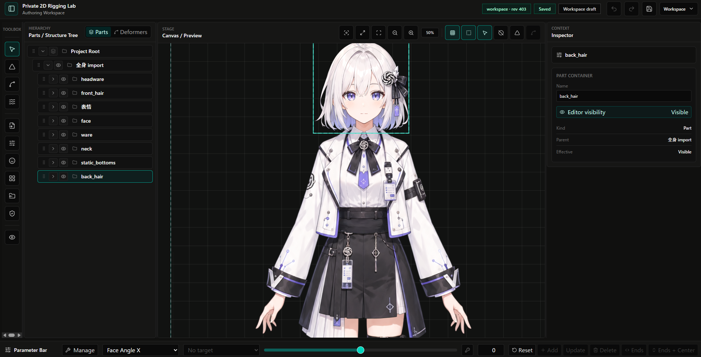

▲ この上に何を置くかは未定義（見出し・導入）
2Dモデリングのエディタを、これから作る。
最初に決めたのは、起動して最初に見える画面だった。
「このエディタを開いたとき、ユーザーが目にするべき画面とは何だろうか？」
最初の一声。まだ何も作らせていない。
良し悪しの物差しを渡す
「多様な機能をシーンに応じて使い分ける道具になる。どこに何があるか分からない、という体験は望ましくない」
画面の案を出す
+---------------------------------------------------------------+ | App Bar: workspace identity / save state / menu / undo / redo | +----------+----------------+------------------+---------------+ | Toolbox | Structure/Parts| Canvas / Preview | Inspector | | | | | | | Import | Parts tree | Empty state or | Project / | | Mesh | PSD group- | model preview | selection | | Rig | derived part | | details | | Dynamics | containers | | Part / | | Params | drawables / | | Drawable / | | Variant | hidden rows | | Source detail | | Atlas | | | Contextual | | Validate | | | controls | | Automate | | | | +----------+----------------+------------------+---------------+ | Parameter Bar: active parameter / slider / key markers | +---------------------------------------------------------------+ | Diagnostics Strip: blocking/warning summary only | +---------------------------------------------------------------+
実物。この時点ではまだ絵と説明文だけで、動くものは何も無い。
「Toolbox は文字じゃなく、アイコンボタンの方がいい。左右のスペースを取りすぎるべきではない」
実際に出た指摘。これがこの段でのほぼ唯一のもの。
直す。指摘が出なくなるまで繰り返す
「じゃあ、作っていいよ」
この段で人間が出した言葉は、これだけ。
作って、触れる形にして渡す
決められた手順書に従って、ほぼ自動で回る。手順の要点は、AIの限界を設計に織り込むこと。
見直しは、作った担当とは別の担当がやる。見直す方が軽いぶん、粗が見える。
——この間、人間は待っているだけ。
触る

実物。この対話の時点では、中央のキャンバスも階層も右の詳細も、まだ空の枠だった。先に決まったのは枠だけで、中身は後から一つずつ埋まった。
レイアウトは、最初の絵からほとんど変わっていない。
——ここまでで一巡。この一巡を、およそ50回重ねてエディタは出来た。
▼ この下に何を置くかは未定義（人間の側に残った三つ・締め）